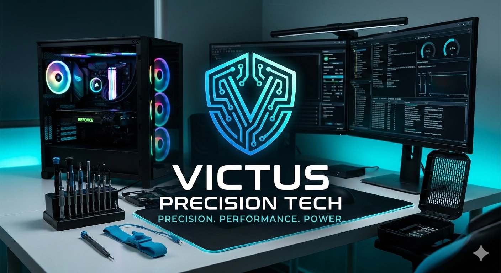

Conoce mas de nuestra empresa, permitenos mostrarte nuestras bases
Convertirnos en el referente técnico preferido por la comunidad gaming y profesional del departamento de San Marcos para el año 2028, reconocidos por nuestra capacidad de diagnosticar y resolver problemas complejos de hardware con estándares de calidad internacionales.
Proporcionar servicios de soporte técnico y mantenimiento especializado para equipos de computación de gama media y alta, garantizando la máxima eficiencia operativa y prolongando la vida útil del hardware mediante procesos de precisión y el uso de componentes de primera calidad.
1.-Precisión Técnica: Cada tornillo, cada cable y cada aplicación de pasta térmica se realiza con exactitud milimétrica.
2.- Integridad del Hardware: Priorizamos la salud a largo plazo del equipo sobre soluciones rápidas o temporales.
3.- Innovación Constante: Nos mantenemos actualizados con las últimas arquitecturas de CPUs, GPUs y sistemas de enfriamiento.
4.-Transparencia con el Cliente: Explicamos el diagnóstico técnico de forma clara y honesta, mostrando las piezas reemplazadas.
